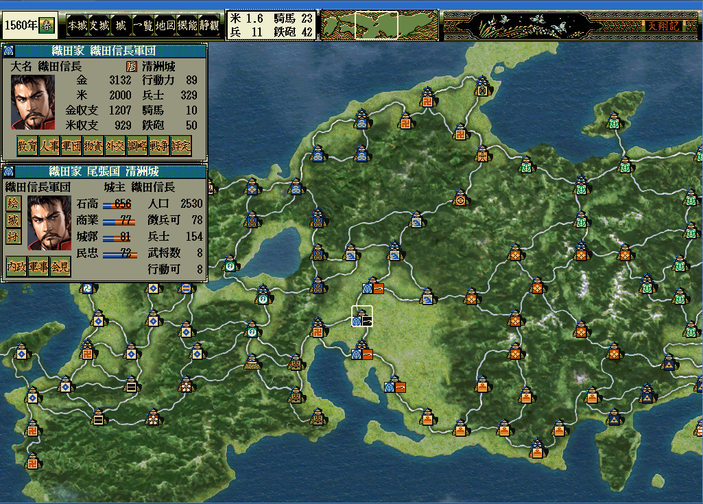

<div class="content-box mb-3 content-lighten">
    <h2><i class="fa fa-map-o fa-fw"></i>%(tshd)sの全国地図を%(ts95)sで使う</h2>
</div>
<div class="content-box mb-3 content-lighten">
    <h3>%(tshd)sの全国地図を%(ts95)sで使う方法</h3>
    <p>%(home)sの<a href="http://xn--rssu31gj1g.jp/?page=nobu_mod_the_mapdatahd">HD版風 全国マップ</a>にて、%(ts95)s用途に再調整した元画像、<br>
    及び、プラグインを提供しています。<br>
    </p>
    <p></p>
</div>
